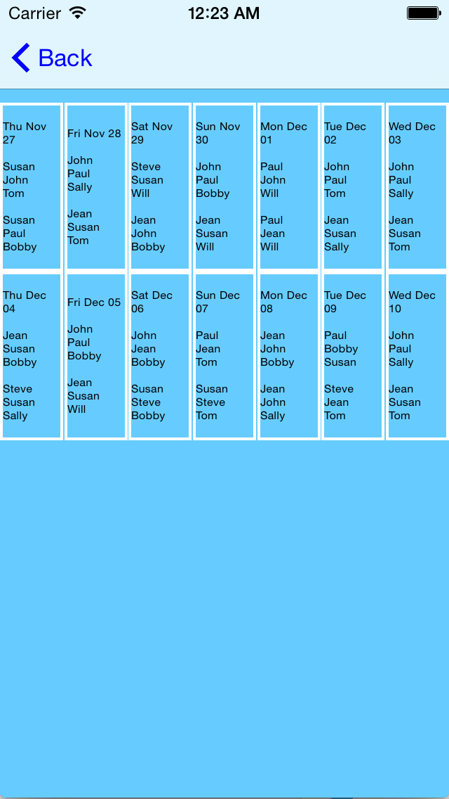
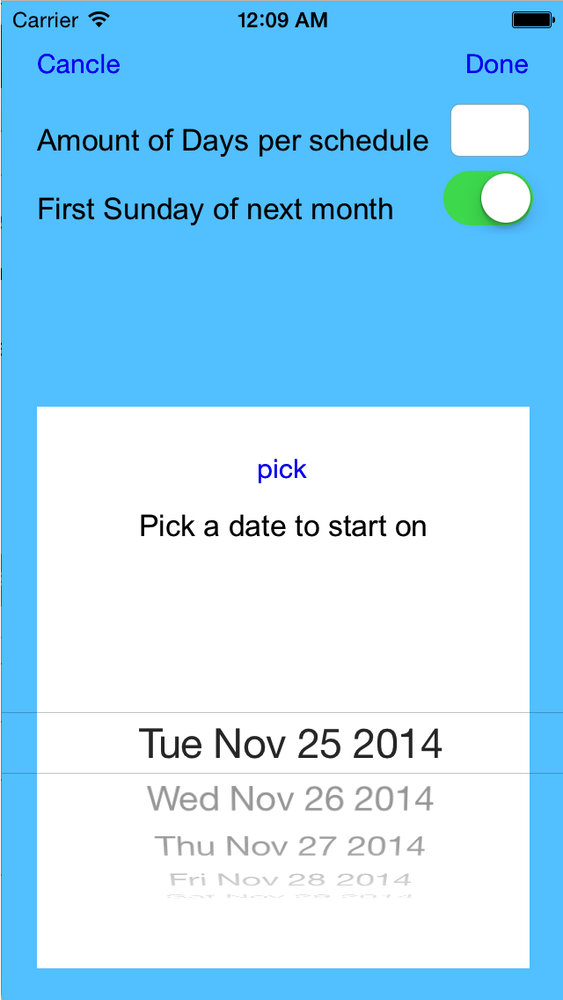
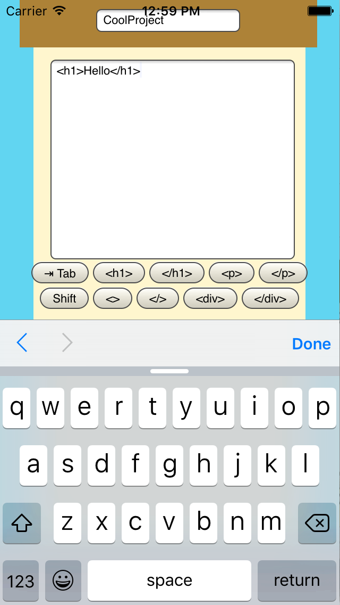
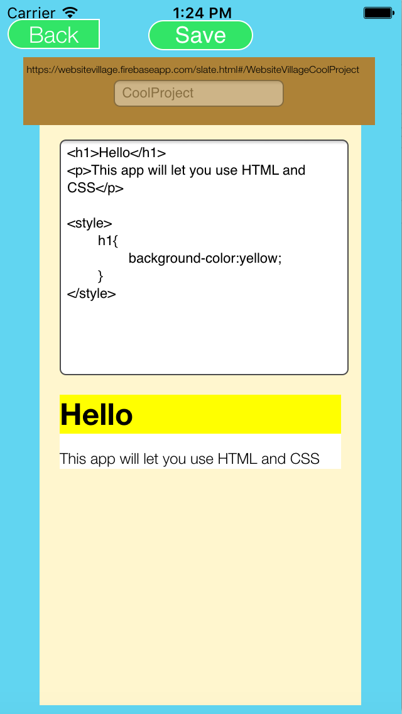

Apps
Over the last few years I have developed a few apps entirely on my own. I usually build these apps with a desire to help out my community a bit, but also to see how they will be used and how many people will use them.
Building apps on my own has taught me many important skills. Building a product start to finish teaches software engineering and design better than any class or seminar. Learning new skills to build apps not only has the direct benefit of new knowledge, but also the added advantage of honing self-teaching skills. I also really enjoy making apps!
The two apps I have developed on my own so far are Schedule SimplR, an iOS schedule building tool, and Website Village, a mobile website builder and publisher which is a hybrid app. Schedule SimplR is available for iPhone in the App Store and Website Village is available in both the iOS App Store and Android Play Store.
Schedule SimplR
The first job I ever had was as a lifeguard. One of the most annoying things about my job was the work schedule. The managers who made the schedule would ask me my availability for the next month and I would tell them. However, I would usually be scheduled when I said I could not work, and I struggled to find a replacement. I noticed this was a problem amongst my coworkers as well, so I asked the managers why they struggled to produce good work schedules. They said they had to make schedules a month in advance and they did not get paid to make the schedules. They claimed making schedules far in advance with so many employee availabilities was really tough. So I decided I would build a schedule maker since none existed as far as I could tell. I spent the winter teaching myself Objective C and iOS development with free online courses, and I spent the next summer building the app. I published the app to the iOS app store in the fall and it had over 1000 downloads in its first year. I learned so much from building the app, Schedule SimplR. Building the app taught me software engineering and mobile development skills. Making an algorithm to schedule employees made me quibble with high-level computer science concepts. Creating the app taught me that, with enough hard work, you could solve any problem in your community. However, perhaps most valuable, learning how to make Schedule SimplR taught me how to teach myself, which is a skill I constantly use even today. View the Schedule SimplR here in the App Store.


Website Village
When I was a freshman in college I had many friends who were journalism majors because my college, the University of Missouri, is known for journalism. My friends wanted me to build them a video game and movie review website. I spent winter break teaching myself web development and I built a fully functioned review website. The website was built using HTML, CSS, and JavaScript, and it enabled its users to upload articles in full HTML, which I believed would enable the site to be media rich. As I expected my friends did not fully utilize the site, so I developed the site into something new. Website Village enables any user to upload code in full HTML and CSS to the Internet from his or her iOS or Android device. Website Village is available for both Android and iOS because it is a hybrid app, which means it is developed using HTML, CSS, and JavaScript. Website Village garnered over 100 users in its first few months. Though Website Village is not quite as popular as Schedule SimplR, I largely published the app both to watch how people would use it and to help others learn web development skills. View the Website Village here in the App Store, here in the Play Store, or Website Village’s website here.

